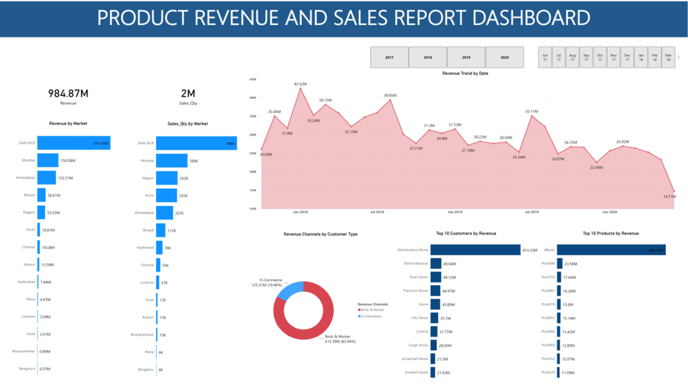
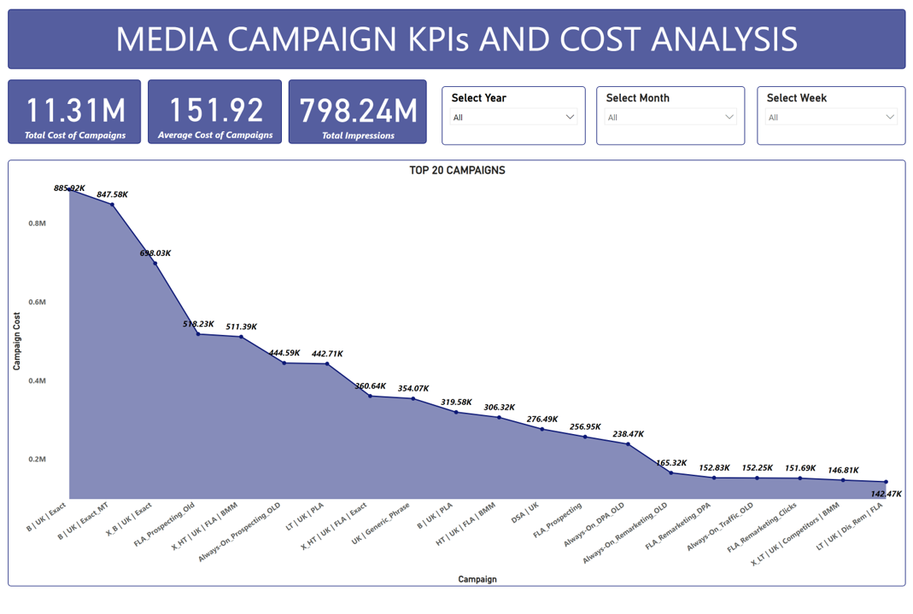

Analyzed the booking data of two fictional hotels, City Hotel and Resort Hotel
communicated insights on some key performance indicators using Power BI..
Find both the interactive Power BI dashboard file and the report of the analytical findings by
Clicking here
In this project I queried a Twitter API using Tweepy, assessed a tweet archive for tidiness and quality issues, cleaned, stored and visualized the data using
Pandas, Numpy, and Matplotlib.
.jpg)
In this project I analyzed data on a bike-sharing system covering the greater San Francisco Bay area using Pandas, Matplotlib and Seaborn and communicated findings using charts and graphs.

In this project I analyzed sales data from different regions of the world
to explore sales data, analyzed related metrics, and present summary reports using pivot tables and built an interactive Excel dashboard.

I analyzed the revenue and sales data of an electronics marketing company to derive insights from their revenue and sales performance. Cleaned and transformed the data for analysis and created an interactive report dashboard to visualize the revenue and sales performance.
Parch and Posey is an e-commerce paper-selling company, that sells three types of papers to companies through different sales channels in different regions. In this project I utilized different functional aspects of SQl to query the database of the company

In this project, I validate and analyze data on the media campaign of a client from the year 2015 to 2019. I utilized Microsoft Excel to merge, filter and clean the data, and Power BI to visualize the data to provide key trends and insights into the media campaigns
Files For this project including the PowerPoint presentation can be found
here